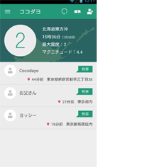
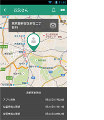
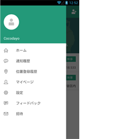

| ココダヨ Basic よくあるご質問 |
| 「ココダヨ」画面名称について ココダヨBasicの各画面を次のように呼びます。 |
| ホーム画面 | 詳細情報画面 |
メニュー |
|
|  |  |  | |
|---|---|---|---|
| 位置情報について |
| Q | 自分が居る場所からかなり離れた位置が現在地になってしまいます。 |
| A | お使いになられている端末、ご契約されているネットワークなどの要因から、実際にいらっしゃる場所から数km程度離れた位置を現在地としてしまうことがございます。今後、位置情報の精度向上に努めてまいりますので、悪しからずご了承ください。 |
| Q | リストに表示されている人の位置情報の表示が「○○県内」、「○○県△△市内」、「○○県△△市□□町ｘ丁目××」など、人によってバラバラです。 |
| A | リストに表示されている方の位置情報の表示内容は、その方があなたに対して設定した位置情報共有レベルによって決まります。 共有レベルが「「非常時のみ」選択中」の場合は、位置情報は表示されません。 「都道府県」の場合は、「○○県内」のように表示されます。 「市区町村」の場合は、「○○県△△市内」のように表示されます。 「街区・番地」の場合は、「○○県△△市□□町ｘ丁目××」のように表示されます。 |
| Q | ある特定の人に対する位置情報共有レベルを変えることはできますか？ |
| A | ホーム画面のリストの中から、位置情報共有レベルを変えたい方をタップしてその方の詳細情報画面を表示してください。 次に、画面上の「編集」アイコンを押すと「編集」画面が開きます。この中の「位置情報共レベル」をタップすると「位置情報共有レベル」を変えることができます。 |
| Q | 私に対する位置情報共有レベルを「都道府県」としている人の位置情報を「街区・番地」に変えることはできますか。 |
| A | 位置情報共有レベルを変更できるのは御本人だけですので、お話し合いしてみてください。 |
| Q | たとえ非常時でも、自分の位置を知らせたくありません。 |
| A | ココダヨ Basic サービスの性質上、非常時には皆様の位置情報がホーム画面のリストに載っている方々に通知されます。悪しからずご了承ください。 |
| Q | 位置情報共有レベルを「街区・番地」にしているのに、市区町村名しか表示されません。 |
| A | ただいま用意しております住所データの中には、「街区・番地」のデータが入っていない市区町村がございます。これらの市区町村内で位置情報を取得されても、「街区・番地」は表示されません。今後、住所データの整備に努めてまいりますので、悪しからずご了承ください。 |
| Q | 現在地を文字だけでなく、地図で見るにはどうすれば良いですか？ |
| A | ホーム画面のリストの中で、地図で見たい方をタップすると詳細情報画面が開きます。詳細情報画面では、地図で現在地を確認することができます。 |
| Q | 地図で見ると現在地はあってるのですが、実際の住所とは違う住所が表示されてしまいます。 |
| A | 現在地から住所を引く住所データの都合上、実際の住所とは異なる住所が表示されてしまうことがあります。今後、精度向上に努めてまいりますので、悪しからずご了承ください。 |
| Q | 地図上で、現在地を示すピンの色に何か意味はあるのですか？ |
| A | ピンの色は、表示されている方の安否情報に連動します。「無事」の方は緑、「助けて」の方は赤、「困った」の方は黄色、「不明」の方は灰色となります。 |
| Q | 地図上で、現在地を示すピンの下に表示される円のサイズが、大きかったり小さかったりするのはどうしてですか？ |
| A | 現在地を示すピンの下に表示される円のサイズは、現在地を取得したときの位置情報の精度によって変わります。位置情報の精度が高い場合は円が小さく、精度が低い場合は円が大きくなります。表示されている方が、概ね、この円の中のどこかにいらっしゃると考えて頂ければと思います。 |
| Q | 地図が大ざっぱにしか表示されません。 |
| A | 地図の表示サイズ、現在地を示すピンの下に表示される円のサイズは、その方があなたに対して設定した位置情報共有レベルによって決まります。 - 位置情報共有レベルを「都道府県」とされている方を地図でみると、ピンはその都道府県の 中心に近い地点を示し、円はその都道府県が収まる程度の大きさとなります。 - 位置情報共有レベルを「市区町村」とされている方を地図でみると、ピンはその市区町村の役所・役場に近い地点を示し、円は半径8kmの大きさとなります。 - 位置情報共有レベルを「街区・番地」とされている方を地図でみると、ピンはその現在地と考えられる地点を示し、円は位置情報の精度に応じたサイズとなります。 なお画面サイズ及びデザインの関係上、対象となる都道府県または市区町村が円内に収まっていなかったり、他の都道府県または市区町村も円内に入ってしまうことがございます。悪しからずご了承ください。 |
| Q | 地図がなかなか表示されません。 |
| A | ネットワーク状況により、地図の表示に時間がかかることがあります。 |
| Q | 【iOS】位置情報が更新されません |
| A | マルチタスク(ホームボタンをすばやく2回押すと表示される、アプリ画面のサムネイル)画面で、 『ココダヨ』アプリを終了してしまうと、位置情報が更新されなくなってしまいます。 |
| メニュー |
| Q | 「メニュー」はどうやって表示するのですか？ |
| A | ホーム画面の左上のアイコンをタップするか、ホーム画面の左端から右にスワイプするとメニューが表示されます。 |
| Q | 「メニュー」から開いた画面から、どうやってホーム画面に戻るのですか？ |
| A | 各画面から、再度「メニュー」を表示して「ホーム」をタップすると、ホーム画面に戻ります。 |
| ホーム画面 |
| Q | ホーム画面が赤くなっています。 |
| A | ホーム画面にリストアップされている方々の中に、安否情報が「無事」でない方がいらっしゃると「非常時」としてホーム画面が赤くなります。 |
| Q | ホーム画面が赤くなりっぱなしです。 |
| A | ホーム画面にリストアップされている方々の中に、安否情報が「無事」でない方がいらっしゃると「非常時」としてホーム画面が赤くなります。その方が「無事」でしたら、その方のココダヨ Basicホーム画面で、安否情報を「無事」に変更していただいてください。 |
| Q | ホーム画面が変わらないです。 |
| A | 更新アイコンをタップすると、最新の情報に更新されます。 |
| Q | 表示順を変えるにはどうすれば良いですか？ |
| A | 「編集」アイコンを押して編集モードにし、リスト右側のアイコンを押しながら上下することで、リストの並び替えができます。 終わったら「完了」アイコンを押してホーム画面に戻ってください。 |
| Q | 地震情報に「？」が入ったものがあります。 |
| A | 配信される地震情報の中には、震度が「不明」のものがございます。ココダヨBasic では、震度が「不明」のとき、「？」を表示しています。 |
| Q | 自分の名前や画像を変えるにはどうすれば良いですか？ |
| A | 「メニュー」の「マイページ」をタップすると、「マイページ」が表示されます。ここで、画像をタップすると画像の変更が、「お名前」「メールアドレス」「電話番号」をそれぞれタップすると各項目の変更ができます。 |
| Q | 相手の名前や画像を変えるにはどうすれば良いですか？ |
| A | ホーム画面のリストの中から、名前を変えたい方をタップしてその方の詳細情報画面を表示してください。 次に、画面上の「編集」アイコンを押すと「編集」画面が開きます。この中の「お名前」をタップすると自分のホーム画面に表示される名前を変えることができます。また画像を変えることができるのは、ご本人だけです。 |
| Q | リクエストを送った相手が「(承認待ち)」のままなのです。 |
| A | リクエストを送られた相手の方が、気付いていないのかもしれません。「(承認待ち)」となっている方をタップすると、再度リクエストを送信することができます。 |
| Q | 送ったリクエストを取り消すことはできますか？ |
| A | 「(承認待ち)」となっている方をタップすると、リクエストを取り下げることができます。 |
| Q | 承認されてしまったリクエストを取り消すことはできますか？ |
| A | 「編集」アイコンを押して編集モードにし、リストの左側の赤いアイコンをタップすると「削除してよろしいですか？」が表示されます。ここで、「削除」を押すことで承認されてしまったリクエストを取り消すことができます。 |
| Q | 「削除」した相手には、何か通知されますか？ |
| A | いいえ。通知はされません。相手のホーム画面からあなたの情報が消え、アクセスできなくなります。 |
| Q | 誤って削除してしまった相手に再度リクエストを送ることはできますか？ |
| A | 右上の追加アイコンをタップして、再度リクエストをお送りください。 |
| Q | 5人目を登録しようとしても登録できません。 |
| A | 現在のココダヨ Basic のサービスでは、登録できる方は最大4人となっております。 |
| Q | 4人も登録していないのに、相手を登録できません。 |
| A | 登録しようとしている相手の方が、すでに他の方を4人登録されてしまっている場合、あなたを追加できませんので、あなたが登録している人数が4人未満でも、登録できないことがあります。 |
| ココダヨボタン |
| Q | 「ココダヨボタン」とは何ですか？ |
| A | 自分の現在地を、ホーム画面に載っている方々に知らせる機能です。ホーム画面の「ココダヨ」をタップして表示される「ココダヨメッセージ」画面から 送信できます。 |
| Q | 用意されているメッセージを変えることはできますか？ |
| A | メニューの「設定」-「ココダヨボタン」で、定型文の編集ができます。 |
| Q | メッセージが途中から入力できなくなります。 |
| A | メッセージは64文字までとなっています。64文字以上は入力できなくしています。 |
| セキュリティについて |
| Q | 私の位置情報が他人に見られてしまうことはないですか？私の位置情報が他人に見られてしまうことはないですか？私の位置情報が他人に見られてしまうことはないですか？ |
| A | 厳格に運用管理されているので、他人が勝手に見ることは出来ません。 |
| Q | ココダヨサーバがハッキングされることはないのですか？ |
| A | スマホと通信するココダヨサーバには、データは保持していません。データベースはインターネットからアクセスできるグローバルIPアドレスを使っていませんので、万が一、ココダヨサーバにアタックされても、データが漏れることはありません。 |
| Q | もしサーバがハッキングされた場合に漏洩する可能性のある情報を教えてください。 |
| A | 基本的にデータ漏洩は起きませんが、起きたと仮定した場合、入力したメールアドレス、表示名、直近の位置情報のみです。 |
| Q | 家族じゃない人が私をリクエストしているみたいで嫌なのですが、どうすれば良いですか？ |
| A | 承認しないを選んで無視してください。 |
| Q | つきあっていた方と「ココダヨ」していたんですが、分かれたので位置を教えたくありません。 |
| A | ホーム画面の右上の「編集」を押して、削除したい人の左の赤アイコンを押して削除してください。自分の「ココダヨ」から相手を削除すると、相手の「ココダヨ」からあなたも自動で削除されます。 |
| その他 |
| Q | 電池の消耗が激しいので困っています。 |
| A | GPS を使用している都合上、端末によっては電池の消耗が激しくなってしまうことがあります。「メニュー」-「設定」-「位置情報のとり方」で、「位置情報の更新間隔」を延ばしていただいたり、同じく「位置情報のとり方」で、「優先度」を「省電力優先」としていただくことで症状が改善されることがあります。お試しください。 |
| Q | アイディア・改善案を送ることはできますか？ |
| A | メニューの「フィードバック」から、ご意見・ご要望をお送り頂けます。サービスの向上のために、ご意見・ご要望をお送り頂けると幸いです。 |
| Q | 知り合いにもココダヨ Basic をインストールしてもらいたいのですが、どうすれば良いですか？ |
| A | 相手の方に「cocodayo.jp」からのメールを受信できるようにして頂き、「メニュー」の「招待」で、お知り合いの方のメールアドレスを入力し、「招待」ボタンを押してください。ココダヨ Basic のダウンロードページへのリンクを記載したメールを送信します。 |
| Q | 子供が勝手に私の登録を削除しちゃいました。勝手に削除出来ないように出来ませんか？ |
| A | 悪しからず、現在はチャイルドロックの様な機能は用意していません。お子様と、「いざというときの安全や安心について」お話し合い下さい。 |